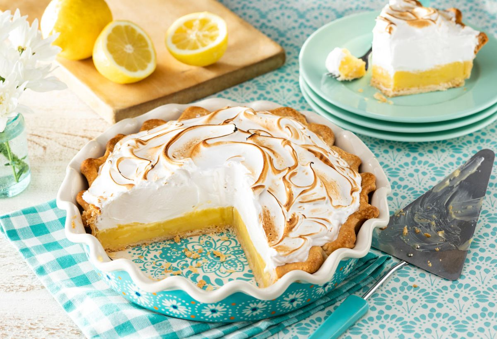

- One 9-inch pie
- 30 Min - prep time
- 10 Min - Cook time
- 40 Min - Total
- 8 Servings
- 1 cup white sugar
- 2
tbspTable spoon all-purpose flour
-
tpsTea spoon cornstarch
- 1 1/2 cups water
- 2 lemons,juiced and zested
- 4 eggs yolks,beaten
- 1 (9 inch) pie crust
- 4 egg whites
- 6 tbsp Table spoonwhite sugar
- 1 ) Preheat Oven:Preheat Oven to 350 degress F(175 degrees C)
- 2 ) Make Lemon Filling:In a medium saucepan
- Whisk together 1 cup sugar,flour,cornstach and salt
- Stir in water,lemon juice and lemon zest
- Cook over medium-high heat,stirring frequently until mixture comes to boil
- Stir in butter
- Place egg yolks in a small bowl and gradually whisk in 1/2 cup of hot sugar mixture
- Whisk egg yolk mixture back into remaining sugar mixture
- Bring to a boil and continue to cook while stirring constantly until thick
- Remove from heat
- Pour filling into Baked pastry shell
- 3 ) Make Meringue:In a large glass or metal bowl
- Whip egg whites until foamy
- Add sugar gradually and continue to whip until whp stiff form
- Spread Meringue over pie,sealing the edges at the crust
- 4 ) Bake: Bake in the preheated oven for 10 minutes or until meringue in golden brown
This is our favourite recipe here at Granny's Pies. It has been enjoyed by pie fans for many years. It is delicious and alsoneasy to follow; it's a piece of cake pie.
search for other lemon meringue pie recipes .
Home
Copyright © 2012 Granny's Pies A granny's Pies Production All rights reserved
- Emilie S.